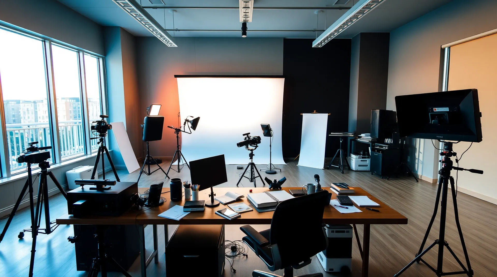

Video de fondo animado en el Hero
Resumen
Calvin cambió el enfoque: en lugar de dos diseñadores, un solo diseñador sentado frente al monitor, editando un website o una sesión de fotos, con movimientos mínimos en el cuerpo y en la pantalla, sutiles pero presentes. En los últimos segundos del loop hay un flash de cámara de fondo, como si el diseñador hubiera hecho el disparo desde la computadora, y luego el loop vuelve a empezar.
No se modificó código ni se generó ningún video. Falta la aprobación de Calvin para generar pruebas.
Estado final (13 oct 2026)
- Integrado en el Hero (
Hero.tsx), sin commit ni deploy todavía. - Diseñador de espaldas editando una página de producto; la misma lata aparece en el monitor y en el set (3 latas frente al fondo blanco). Un strobe con softbox nuevo dispara un solo flash por ciclo.
- Fotograma base creado en local (Flux 2 Klein 9B vía Wan2GP/Pinokio); video generado con Gemini. La animación local con Wan 2.2 se descartó por deriva de cámara.
- Loop ping-pong centrado en el flash, 18 s, sin audio, para evitar el salto del clip original.
- Archivos:
hero-loop.webm(~1.0 MB),hero-loop.mp4(~0.8 MB),hero-loop-mobile.mp4(~0.35 MB) yhero-poster.jpg. - Sin video con
prefers-reduced-motionnisaveData; en ≤767 px se usa la versión ligera. - Verificado: build OK, reproducción en preview, sin errores de consola. Pendiente revisar a ancho de escritorio completo y en modo claro.
Base: la imagen actual del Hero

public/images/stock/hero-studio.webp: estudio con fondo blanco, luces y trípodes, escritorio con la silla vacía abajo a la derecha.La imagen ya trae todo lo necesario: la silla vacía en primer plano es el lugar natural para el diseñador (visto de espaldas o en tres cuartos), y el fondo blanco con luces de estudio sirve de origen del flash. El Hero actual pone el texto a la izquierda, con degradado más oscuro de ese lado, así que el diseñador queda a la derecha.
Cómo se vería el loop (8–10 s)
Criterios
Movimiento mínimo
Leve movimiento de hombros y cabeza, mano en el mouse, cambios sutiles de luz en el monitor. Nada de gestos amplios.
Flash accesible
Destello cálido de 0.3–0.5 s con subida y bajada, sin blanco puro a máxima intensidad, un solo destello por ciclo.
Encuadre
Diseñador de espaldas o en tres cuartos, a la derecha; pantalla abstracta sin texto legible. El lado izquierdo queda libre para el texto.
Fallbacks
La imagen actual como poster para saveData, prefers-reduced-motion y mientras carga.
Desenfoque + overlay
Blur leve y capa navy (oscuro) / paper (claro). El Hero ya tiene una capa de desenfoque y degradado que se reutiliza.
Peso controlado
720p, sin audio, MP4 (H.264) + WebM, 1–2 MB. autoplay muted loop playsInline.
Cómo se generaría
| 1. Fotograma base | Partir de hero-studio.webp y generar con IA una versión con el diseñador sentado en la silla (edición de imagen, manteniendo el estudio igual). Se aprueba este fotograma antes de animar. |
|---|---|
| 2. Escena base | Image-to-video desde el fotograma aprobado: prompt de movimiento mínimo, cámara fija, 5–6 s, varias pruebas para elegir la mejor. |
| 3. Flash | Segundo clip (o efecto en edición) donde las luces del estudio y el fondo blanco destellan una vez, y la escena vuelve al estado base. |
| 4. Loop | Unir en edición: escena base, flash, regreso al primer cuadro. Ajustar el corte para que no se note la costura. |
| 5. Compresión | 720p, sin audio, MP4 + WebM, 1–2 MB; versión móvil más ligera. |
| 6. Integración | En src/pages/home/components/Hero.tsx: elemento <video> detrás de la capa de desenfoque actual, con poster y respeto a prefers-reduced-motion. |
Riesgos
| Riesgo | Mitigación |
|---|---|
| Loop poco natural | Un solo sujeto casi quieto, desenfoque, y el flash como punto de corte. |
| Flash molesto o inseguro | Destello suave y único por ciclo; sin video con reduced-motion. |
| Legibilidad del texto | El sujeto va a la derecha y se mantiene el overlay; verificar contraste durante el flash. |
| Batería y datos en móvil | Desactivar el video en móvil o servir una versión ligera. |
Mis preferencias aplicadas
- Consultar antes de generar cualquier video (regla del proyecto): no se generó nada y se pide aprobación antes de empezar.
- Paleta del sitio:
navy#111827 en modo oscuro,paper#E6DFD2 en modo claro. - Comunicación y documentación en español.
- Decisiones y cambios relevantes quedan registrados en
PROJECT_LOG.md.
Siguientes pasos
- Calvin aprueba el plan y el costo de generar pruebas.
- Generar y aprobar el fotograma base con el diseñador en la silla.
- Generar pruebas de la escena base y del flash; elegir las mejores.
- Unir el loop, comprimir e integrar en el Hero.
- Verificar en modo claro, oscuro, móvil y con reduced-motion.